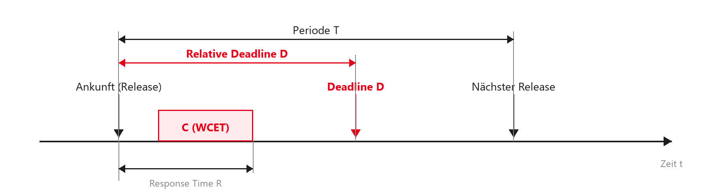
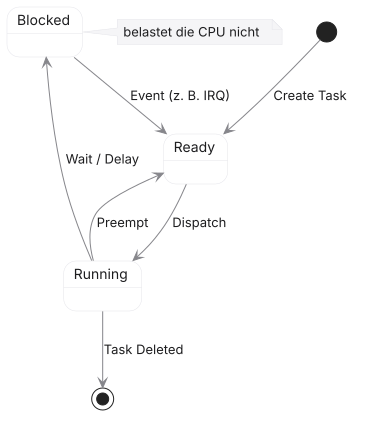
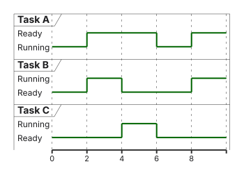
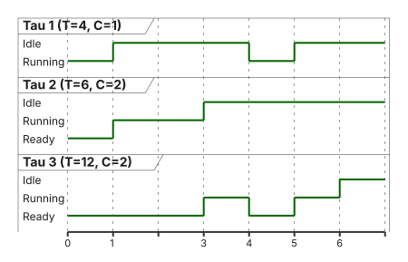
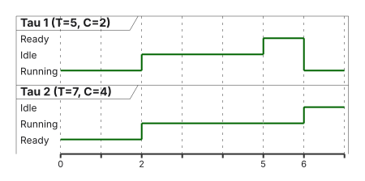
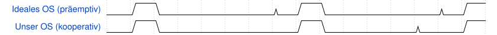

%%{init: {'theme': 'base', 'themeVariables': {'background': '#FFFFFF', 'primaryColor': '#FFFFFF', 'primaryBorderColor': '#E5E5EA', 'primaryTextColor': '#1D1D1F', 'lineColor': '#86868B', 'secondaryColor': '#F5F5F7', 'tertiaryColor': '#FFFFFF', 'mainBkg': '#FFFFFF', 'nodeBorder': '#E5E5EA', 'clusterBkg': '#F5F5F7', 'clusterBorder': '#E5E5EA', 'titleColor': '#1D1D1F', 'edgeLabelBackground': '#FFFFFF'}}}%%
flowchart LR
A[SysTick Timer] -->|1 ms Interrupt| B[SysTick_Handler]
B -->|Tick erhöhen| C{Scheduler: Next Task?}
C -->|Ja, Wechsel| D[Trigger PendSV]
D -->|Wartet auf CPU| E[PendSV_Handler]
E -->|Push/Pop Register| F[Neue Task läuft]
style D fill:#FFFFFF,stroke:#E2001A,stroke-width:2px !important
style E fill:#FFFFFF,stroke:#E2001A,stroke-width:2px !important
02 · Scheduling-Theorie
Task-Modelle, Utilization, RMS/EDF · EZS · DHBW Stuttgart
Prof. Dr.-Ing. Daniel Klünder
Willkommen zurück zu Echtzeitsystemen!
- Herzlich willkommen zum 2. Termin unserer Vorlesung
- Letzte Woche: Hardware, Cortex-M4, Interrupts und Bare-Metal
- Heute: von der Hardware-Ebene zu Informatik und Mathematik
- Fokus: Wie verteile ich CPU-Zeit gerecht und vorhersagbar?
- Praxis: eigener kleiner Scheduler
Agenda für heute
- Recap: Warum Bare-Metal nicht skaliert
- Task-Modelle: Software mathematisch beschreiben
- Metriken: WCET und CPU-Auslastung (\(U\))
- Scheduling-Verfahren: kooperativ bis präemptiv
- RMS, Utilization Bound, RTA und EDF
- SysTick/PendSV und Labor: Round-Robin
Lernziele des heutigen Tages
- Task-Modell (\(C_i\), \(T_i\), \(D_i\)) aufstellen und skizzieren
- WCET und CPU-Auslastung (\(U\)) verstehen und berechnen
- Kooperatives und präemptives Scheduling unterscheiden
- Rate Monotonic Scheduling (RMS) einordnen und Grenzen kennen
- Round-Robin-Scheduler als Laborziel verstehen
Recap: Polling vs. Interrupts
- Polling (Super-Loop):
- Einfach, linear, wenige Race Conditions
- Problem: Latenzen addieren sich; lange Funktionen blockieren alles
- Interrupts (Vordergrund/Hintergrund):
- Hardware erzwingt Kontextwechsel (Präemption)
- Problem: ISRs müssen extrem kurz sein
Recap: Die Spaghetti-Code-Falle
- System wächst: Sensoren, Displays, USB, Ethernet, Motorregelung
- Nicht alles darf in Interrupts (nur die kürzesten Routinen)
- Folge in Bare-Metal:
- ISRs setzen unzählige Flags (
if (usb_ready_flag) …) - Main-Loop wird unübersichtlich
- Prioritäten und Deadlines sind kaum noch berechenbar
- ISRs setzen unzählige Flags (
Der Paradigmenwechsel: Das Betriebssystem
- Lösung: Zeitmanagement an ein RTOS delegieren
- Statt einer riesigen
while(1): viele kleine, getrennte Endlosschleifen - Jede Schleife heißt Task (oder Thread)
- Der Scheduler entscheidet, wann welche Task laufen darf
Was ist Scheduling?
- Scheduling (Ablaufplanung): zeitliche Anordnung von Aufgaben
- Ressource: CPU-Rechenzeit
- Kriterien:
- Fairness: jede Task bekommt irgendwann Zeit (Starvation vermeiden)
- Echtzeit (Spezialfall): Fairness oft egal — Deadlines haben Vorrang
Vom C-Code zum Modell
- Mathematische Garantien brauchen Abstraktion
- Der Scheduler sieht nicht „Motor“ oder „LED“, sondern Parameter
- Typisch: Ausführungszeit, Periode, Deadline
- Formalisierung: das Task-Modell
Definition: Was ist eine Task?
- Eine Task \(\tau_i\) ist die kleinste Ausführungseinheit in einem RTOS
- Jede Task besitzt:
- eigenen Kontext (Register, Stack)
- meist eine endlose
while(1)-Schleife
- Illusion: jede Task „glaubt“, die CPU allein zu haben
- Job: eine konkrete Ausführung (ein Schleifendurchlauf)
Parameter einer Task: \(C_i\) (Ausführungszeit)
- \(C_i\) (Computation Time / Capacity): Rechenzeit ohne Unterbrechung
- In harten Echtzeitsystemen: \(C_i\) = WCET (Worst-Case Execution Time)
- Ohne bekannte WCET keine mathematische Garantie
Parameter einer Task: \(T_i\) (Periode)
- \(T_i\) (Period): Abstand zwischen zwei Releases der Task
- Beispiel: Temperatursensor 10-mal/s \(\rightarrow T_i = 100\,\mathrm{ms}\)
- In der Theorie oft strikt periodische Tasks
Parameter einer Task: \(D_i\) (Deadline)
- \(D_i\) (Deadline): maximale Zeit nach dem Release bis zum fertigen Ergebnis
- \(R_i\) (Response Time): tatsächliche Antwortzeit inkl. Unterbrechungen
- Goldene Regel der Echtzeit — schedulbar nur wenn:
\[R_i \le D_i\]
Das grafische Task-Modell
- Alle Parameter an einem Job auf dem Zeitstrahl
- Release, Ausführung \(C\), Response Time \(R\), Deadline \(D\), Periode \(T\)

Deadline-Klassifizierung
Verhältnis von Deadline zu Periode:
- Implicit Deadline: \(D_i = T_i\)
- Constrained Deadline: \(D_i \le T_i\)
- Arbitrary Deadline: \(D_i\) beliebig
Für die meisten RMS-Rechnungen: Implicit Deadlines — Standard in Steuergeräten.
Task-Typen nach Auslöser
- Periodisch: feste Periode \(T_i\), typisch Timer/Regler
- Sporadisch: zufälliger Auslöser, aber garantierte Mindestzeit (Minimum Inter-Arrival Time) — wie periodisch mit \(T_{\min}\)
- Aperiodisch: kein Minimum (z. B. Netzwerk-Ping) — harte Garantien unmöglich
Das RTOS Task-Zustandsmodell
- Running: besitzt die CPU (Single-Core: genau eine Task)
- Ready: will rechnen, wartet in der Warteschlange
- Blocked / Waiting: wartet auf Ereignis (Delay, Semaphore, UART) — belastet die CPU nicht
Visualisierung der Zustandsmaschine

- Blocked wird nie direkt Running — immer zuerst Ready-Queue
Metrik: CPU-Auslastung (\(U\))
- Utilization \(U\): Indikator, ob ein System überhaupt lösbar ist
- Anteil einer Task: \(U_i = \frac{C_i}{T_i}\)
- Beispiel: \(C=2\,\mathrm{ms}\), \(T=10\,\mathrm{ms}\) \(\rightarrow U_i = 0{,}2\) (20 %)
- Systemauslastung:
\[U = \sum_{i=1}^{n} \frac{C_i}{T_i}\]
Auslastung: Ein Rechenbeispiel
- System mit drei Tasks:
- \(\tau_1\): \(C_1=1\), \(T_1=4\) \(\rightarrow U_1=25\%\)
- \(\tau_2\): \(C_2=2\), \(T_2=5\) \(\rightarrow U_2=40\%\)
- \(\tau_3\): \(C_3=2\), \(T_3=10\) \(\rightarrow U_3=20\%\)
- Gesamt: \(U = 85\%\)
- Erste Regel: \(U > 1\) (100 %) → unmöglich schedulbar
- Bei 85 %: hängt vom Algorithmus ab!
Exkurs: Das Problem mit der WCET
- Warum WCET statt ACET (Average)?
- ACET vielleicht 1 ms — Auslegung auf 1 ms crasht, wenn der Worst Case eintritt
Wie ermittelt man die WCET?
- Analytisch (statisch)
- Code ohne Laufzeit mathematisch analysieren
- Absolute Obergrenze
- Schwer bei Caches (z. B. Cortex-M7)
- Empirisch (Messung)
- Stresstests, Oszi, Trace-Tools
- Nahe an der Realität
- Keine absolute Garantie — oft mit Puffer
Zusammenfassung Task-Modell
- Tasks: getrennte Endlosschleifen
- OS orchestriert Ready / Running / Blocked
- Parameter: \(C_i\) (WCET), \(T_i\) (Periode), \(D_i\) (Deadline)
- CPU-Auslastung \(U\) muss \(\le 100\%\) sein
Die Kernfrage des Schedulings
- Mehrere Tasks im Zustand Ready
- Nur ein Core: wer darf rechnen?
- Genau das entscheidet der Scheduling-Algorithmus
- Die Wahl entscheidet über Echtzeit oder Deadline-Miss
Scheduler vs. Dispatcher
- Scheduler (Entscheider):
- Algorithmus: wer hat Vorrang?
- aktualisiert Task-Control-Blöcke (TCB)
- Dispatcher (Ausführer):
- Context Switch (Register sichern/laden)
- Stack-Pointer der gewählten Task setzen
Klassifizierung: Offline vs. Online
Offline-Scheduling - Fahrplan vor dem Flashen berechnet - Laufzeit: Tabelle abarbeiten (Time-Triggered) - Vorteil: maximal deterministisch - Nachteil: starr
Online-Scheduling - Entscheidung zur Laufzeit (Event-Triggered) - Flexibel bei unvorhersehbaren Events - Standard: FreeRTOS, Linux - Nachteil: Scheduler kostet CPU-Zeit
Klassifizierung: Kooperativ vs. Präemptiv
- Wie bekommt das OS die CPU zurück?
- Kooperativ (non-preemptive):
- Task gibt CPU freiwillig ab (
os_yield())
- Task gibt CPU freiwillig ab (
- Präemptiv:
- Hardware-Timer entreißt der Task die CPU
- Task merkt den Wechsel nicht
Kooperatives Scheduling (Non-preemptive)
- Vorteil: wenige Race Conditions während der Berechnung
- Nachteil: vergessenes
yield()oder Endlosschleife → System-Freeze
Präemptives Scheduling
- Standard moderner RTOS (FreeRTOS, VxWorks, Zephyr)
- Hardware-Interrupt (z. B. SysTick) weckt den Scheduler
- Höherpriore Ready-Task → sofortiger Wechsel
- Gefahr Shared Data: Präemption mitten im Schreiben → korrupte Daten
- Lösung später: Mutex/Semaphore (Ressourcen-Termin)
Prioritätsbasiertes Scheduling
- Jede Task erhält eine Priorität
- Die Ready-Task mit höchster Priorität gewinnt
- Statisch: Priorität zur Erzeugung fest (Grundlage RMS)
- Dynamisch: OS passt Priorität zur Laufzeit an (Grundlage EDF)
Der Spezialfall: Round-Robin (RR)
- Gleiche Priorität bei mehreren Ready-Tasks?
- Round-Robin: Zeitscheiben (Time Slices, z. B. 1 ms)
- A → B → C → A …
- Fair, aber allein für harte Echtzeit ungeeignet (ignoriert Deadlines)
Visualisierung: Round Robin

- Gleiche Zeitscheibe, ringförmiger Wechsel
Das Problem des Aushungerns (Starvation)
- Strikt prioritätsbasiert und präemptiv
- Task A: HIGH, Task B: LOW
- Task A in
while (1)ohne Delay/Block - Ergebnis: Task B verhungert (Starvation)
- RTOS garantiert keine Fairness bei ungleichen Prioritäten
Wann ist ein System schedulbar?
- Ein Task-Set ist schedulbar, wenn ein Algorithmus existiert, der allen Jobs ihre Deadlines einhält
- Schedulability-Test: Vorab-Beweis (Formel / Analyse)
- Ziel: Garantie vor dem Ausliefern, nicht Hoffnung nach dem Flashen
Schedulability-Tests
Exakter Test (hinreichend und notwendig) - Bestanden: sicher - Durchgefallen: sicher nicht schedulbar - Nachteil: oft teuer (NP-schwer)
Konservativer Test (nur hinreichend) - Bestanden: Garantie - Durchgefallen: unklar (pessimistisch) - Vorteil: einfache Formel
Rate Monotonic Scheduling (RMS)
- Industrie-Standard für periodische Echtzeitsysteme
- Liu & Layland (1973)
- Typ: statisch, präemptiv, prioritätsbasiert
- Goldene Regel: je kürzer \(T_i\), desto höher die Priorität (höhere Rate = höhere Priorität)
RMS: Die mathematischen Annahmen
- Um RMS mathematisch zu beweisen, trafen Liu & Layland (1973) strikte Annahmen:
- Alle Tasks sind strikt periodisch
- Deadline = Periode (\(D_i = T_i\))
- Tasks sind völlig unabhängig (keine Mutexes, kein Shared Memory)
- Laufzeit des Schedulers (Context Switch) ist 0
- In der Realität ist keine dieser Annahmen zu 100 % erfüllt — trotzdem ist RMS die Basis fast aller realen Systeme
Beispiel 1: RMS-Prioritäten vergeben
- Gegebenes Task-Set:
- \(\tau_1\): \(C_1 = 1\), \(T_1 = 4\)
- \(\tau_2\): \(C_2 = 2\), \(T_2 = 6\)
- \(\tau_3\): \(C_3 = 2\), \(T_3 = 12\)
- Auslastung: \(U = \frac{1}{4} + \frac{2}{6} + \frac{2}{12} = 0{,}25 + 0{,}33\overline{3} + 0{,}16\overline{6} = 75\,\%\)
- Regel: kürzere Periode \(\rightarrow\) höhere Priorität
- Ergebnis: \(\tau_1\) (höchste Prio), \(\tau_2\) (mittel), \(\tau_3\) (niedrigste)
Visualisierung: Präemptives RMS

- Bei \(t=4\) unterbricht \(\tau_1\) die laufende \(\tau_3\) präemptiv (\(C_3=2\): erste Zeiteinheit \(t=3\)–\(4\), Rest nach Präemption)
Der kritische Moment (Critical Instant)
- Schlimmster Fall für jede Task: Start exakt zeitgleich mit allen höherprioren Tasks
- Dieser Zeitpunkt heißt Critical Instant
- Beweis-Logik: Hält die Task unter diesen Bedingungen die Deadline ein, hält sie sie immer ein
Die RMS-Schranke (Liu & Layland, 1973)
- Hinreichender, konservativer Schedulability-Test
- Ein Task-Set aus \(n\) Tasks ist unter RMS garantiert schedulbar, wenn:
\[U = \sum_{i=1}^{n} \frac{C_i}{T_i} \le n\bigl(2^{1/n}-1\bigr)\]
- \(U\): Systemauslastung; \(n\): Anzahl der Tasks
Werte der RMS-Schranke
- Einsetzen von \(n\) in \(n(2^{1/n}-1)\):
| \(n\) | Schranke |
|---|---|
| 1 | \(100\,\%\) |
| 2 | \(\approx 82{,}8\,\%\) |
| 3 | \(\approx 78{,}0\,\%\) |
| 4 | \(\approx 75{,}7\,\%\) |
| \(\infty\) | \(\ln 2 \approx 69{,}3\,\%\) |
Interpretation der RMS-Schranke
- Zone 1: \(U \le n(2^{1/n}-1)\) — hinreichend schedulbar (Liu und Layland)
- Faustregel: \(U \le \ln 2 \approx 69{,}3\,\%\) ist für jedes \(n\) sicher
- Zone 2: Schranke \(< U \le 100\,\%\) — Grauzone; hinreichender Test sagt „Nein“, System kann trotzdem laufen
- Lösung: exakter Test (Response-Time Analysis)
- Zone 3: \(U > 100\,\%\) — physikalisch unmöglich
Response-Time Analysis (RTA)
- Exakter Test für die Grauzone
- Worst-Case-Antwortzeit \(R_i\) iterativ:
\[R_i^{(k+1)} = C_i + \sum_{j \in hp(i)} \left\lceil \frac{R_i^{(k)}}{T_j} \right\rceil C_j\]
- \(hp(i)\): Menge aller Tasks mit höherer Priorität als \(i\)
- Abbruch: \(R_i^{(k+1)} = R_i^{(k)}\) (gefunden) oder \(R_i > D_i\) (Deadline verpasst)
Fazit: RMS in der Praxis
- Vorteile:
- Simpler Algorithmus, minimaler OS-Overhead
- Stabil bei Überlast: nur niedrigpriore Tasks verpassen Deadlines
- Nachteil:
- Bei harten Garantien oft keine volle 100 %-Auslastung möglich
Earliest Deadline First (EDF)
- RMS ist statisch — EDF berechnet Prioritäten dynamisch
- Regel: die Task mit der nächsten absoluten Deadline erhält die höchste Priorität
- Scheduler muss bei jedem OS-Tick Prioritäten neu sortieren
- Einsatz: Forschung, Soft Real-Time (z. B. Linux
SCHED_DEADLINE)
Die mathematische Eleganz von EDF
- Für unabhängige, präemptive Tasks mit Implicit Deadlines:
\[U = \sum_{i=1}^{n} \frac{C_i}{T_i} \le 1\]
- Exakt schedulbar genau dann, wenn \(U \le 1\)
- Bedeutung: CPU bis 100 % auslastbar, ohne Deadlines zu verpassen
Visualisierung: Dynamisches EDF
- \(\tau_1\): \(C_1=2\), \(T_1=5\); \(\tau_2\): \(C_2=4\), \(T_2=7\)
- Auslastung \(U \approx 97\,\%\) — Liu-und-Layland-Schranke und exakter RMS-Test scheitern
- Mit EDF ändern sich die relativen Prioritäten dynamisch

Der Haken an EDF: Der Domino-Effekt
- Warum nutzt die Automobilindustrie kaum EDF?
- Verhalten bei Überlast (\(U > 100\,\%\)):
- Eine Task überschreitet ungeplant ihre WCET
- Ihre Deadline rückt nah \(\rightarrow\) EDF gibt ihr höchste Priorität
- Folge: sie blockiert andere Tasks — diese verpassen ebenfalls Deadlines
- Domino-Effekt: eine Überlast lässt das System kaskadierend abstürzen
Zusammenfassung: RMS vs. EDF
| Eigenschaft | RMS | EDF |
|---|---|---|
| Priorität | Statisch (nach \(T_i\)) | Dynamisch (nach absoluter \(D_i\)) |
| Max. \(U\) | Hinreichende Faustregel \(\ln 2\approx 69{,}3\,\%\) (\(n\)-abhängig; bei \(n=3\approx 78\,\%\)); exakt bis \(100\,\%\) möglich (RTA) | \(100\,\%\) garantiert |
| Überlast | Deterministisch (Low-Prio stirbt) | Chaotisch (Domino-Effekt) |
| OS-Overhead | Sehr niedrig | Hoch (Listen-Sortierung) |
| Einsatz | AUTOSAR, FreeRTOS, Industrie | Forschung, Multimedia, Soft-RT |
Unter der Haube: Wie baut man einen Scheduler?
- Wechsel von Mathematik zurück zur Hardware-Praxis
- Präemptiver Scheduler (wie FreeRTOS) auf dem STM32H755 braucht zwei ARM-Komponenten:
- SysTick-Timer (Herzschlag)
- PendSV-Exception (heimlicher Kontextwechsel)
Der Herzschlag: SysTick-Timer
- 24-Bit Down-Counter, fest in jedem ARM Cortex-M
- Typisch: Überlauf jede Millisekunde (1 kHz)
- Bei Überlauf: SysTick-Interrupt
- Taktgeber des OS: jede ms prüfen, ob ein Task-Wechsel nötig ist
Code: Die SysTick-ISR
Warum der Umweg über PendSV?
- Context Switch direkt im SysTick steckt in einer High-Prio-ISR
- Problem: UART-ISR läuft → SysTick unterbricht und wechselt Task → UART-Daten verloren
- Lösung: PendSV (Pendable Service Call)
- Ausnahme mit niedrigster Priorität (bei 4 Priority-Bits: Stufe 15)
- SysTick merkt den Wechsel nur vor (
pend) - Context Switch erst, wenn alle anderen Interrupts fertig sind
Der Task Control Block (TCB)
- Woher kennt das OS den Program Counter der unterbrochenen Task?
- Alle Infos in einem C-Struct — dem TCB; jede Task hat einen eigenen
Der Software-Context-Switch (PendSV)
- Was passiert in
PendSV_Handler(Assembler, FreeRTOS-typisch)?- Aktuellen PSP lesen (Stack der alten Task)
- Register R4–R11 auf diesen Stack pushen
- Aktualisierten SP im TCB der alten Task speichern
- SP der neuen Task aus deren TCB laden
- R4–R11 der neuen Task poppen
- Kontext wiederherstellen / Rücksprung (
BX LR) — neue Task läuft
Zusammenfassung: Die OS-Architektur
Vorbereitung für das Labor heute
- Präemptives RTOS inkl. PendSV-Assembler an einem Nachmittag: zu komplex
- Stattdessen: eigener kooperativer Round-Robin-Scheduler
- Vorteile:
- Kein Assembler nötig
- Kein Hardware-SysTick zwingend (
while(1)+yield) - Ideal, um TCB-Arrays zu verstehen
- Am Start: Code-Gerüst für den STM32H755
Labor-Schritt 1: Die TCB-Liste
- Array aus Funktionszeigern und Zuständen
Labor-Schritt 2: Die Scheduler-Logik
- Funktion
os_yield() - Ringförmig nächste READY-Task (Round-Robin)
- Logik:
- Aktuelle Task pausieren
- Index: \((idx + 1) \bmod 3\)
- READY? Dann Funktionszeiger aufrufen
- Warnung:
task_func()ausos_yieldist didaktisch — Stack wächst; Produktion: Dispatcher
Labor-Schritt 3: Hardware-Messung (Oszilloskop)
- Drei Tasks (z. B. drei LEDs umschalten)
- Test: Jitter am Oszilloskop messen
- GPIO am Anfang von Task 1 auf High, am Ende auf Low

- Erwartung: Schwankungen — Timing hängt vom C-Code der anderen Tasks ab
Labor-Schritt 4: Den Scheduler crashen
- Schwachpunkt kooperativer Systeme spüren:
- In Task 2 lange Zählschleife ohne
os_yield() - Oszilloskop beobachten
- In Task 2 lange Zählschleife ohne
- Ergebnis: Task 1 aus dem Tritt oder eingefroren
- Erkenntnis für Woche 3: deshalb ab nächster Woche präemptives FreeRTOS
Zusammenfassung des Tages
- Task-Modell: WCET \(C\), Periode \(T\), Frist \(D\); Auslastung \(U\) als Analyse-Fundament
- RMS: Priorität statisch nach Rate; Liu-Layland hinreichend (\(n\)-abhängig, Grenzwert \(\approx 69{,}3\,\%\)), exakt via RTA; deterministisch bei Überlast
- EDF: nächste Frist, \(U \le 1\); bei Fehler Domino-Effekt
- Cortex-M: SysTick + PendSV ermöglichen präemptives Multitasking
- Labor: kooperativer Round-Robin — und warum er scheitern kann
Ausblick auf Termin 3
- Nach dem Spiel-Scheduler: Wechsel in die Profiliga
- Nächste Woche: FreeRTOS auf dem Cortex-M4
- Kooperative Architektur weg, harte Präemption aktiv
- FreeRTOS-API (CMSIS_V2 im Labor):
osThreadNew(),osDelay() - Vorbereitung: Zeiger (Pointer) in C auffrischen